A0029 8 帧
caiwenji_skill4 · caiwenji_skill4_2-animation_
caiwenji_skill4 · caiwenji_skill4_2-animation_
chanshi_phyattack · chanshi_phyattack-animation_

chanshi_skill1 · chanshi_skill1-animation_
daodunbing_skill1 · daodunbing_skill1-animation_
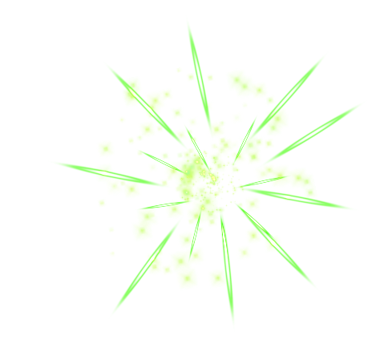
daoshi_phyattack · daoshi_phyattack-animation_

daoshi_skill1 · daoshi_skill1-animation_
daoshi_skill1 · daoshi_skill1_2-animation_
daoshi_skill2 · daoshi_skill2-animation_

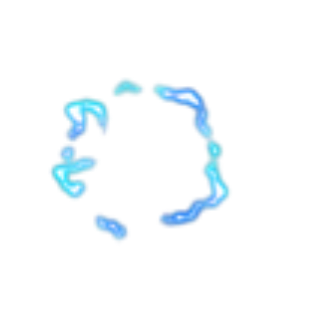
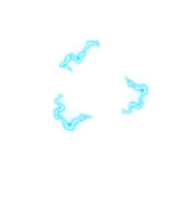
dunqibing_skill1 · dunqibing_skill1-animation_
guanyu_2phyattack · guanyu_2_phyattack_1-animation_
guanyu_2phyattack · guanyu_2_phyattack_2-animation_
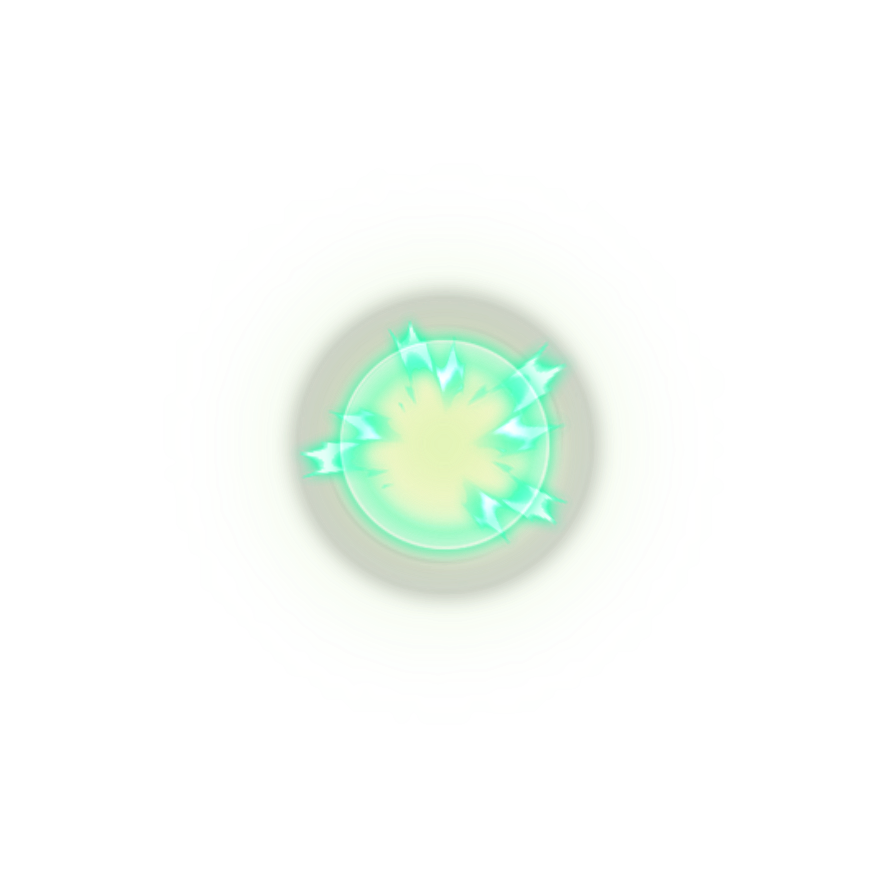
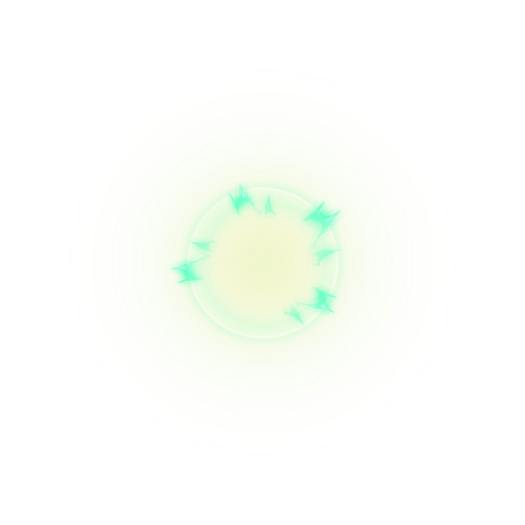
guanyu_2skill1 · guanyu_2_skill1_1-animation_
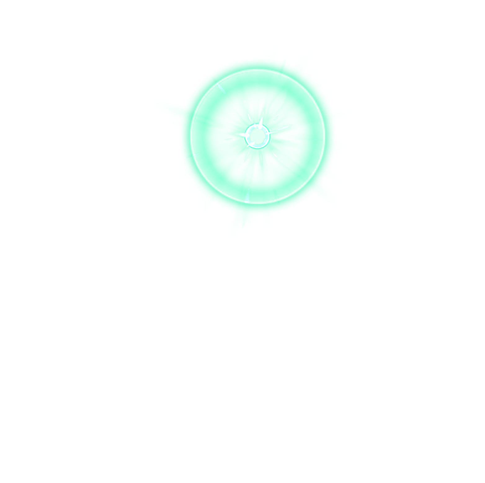
guanyu_2skill1 · guanyu_2_skill1_2-animation_
guanyu_2skill2 · guanyu_2_skill2-animation_
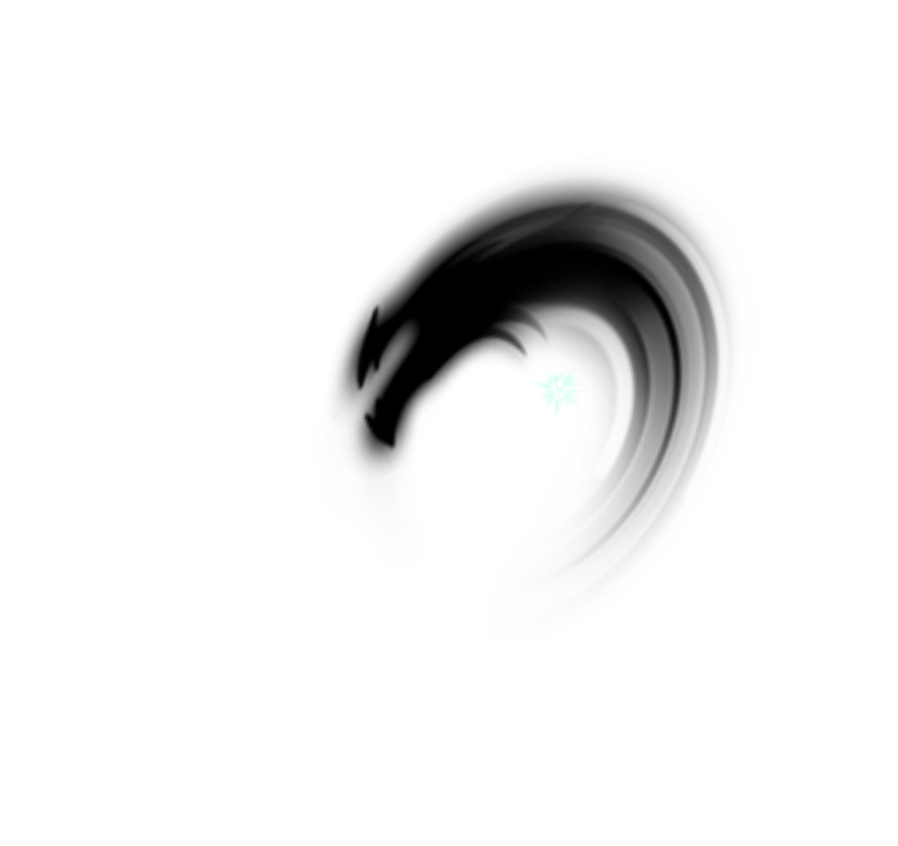
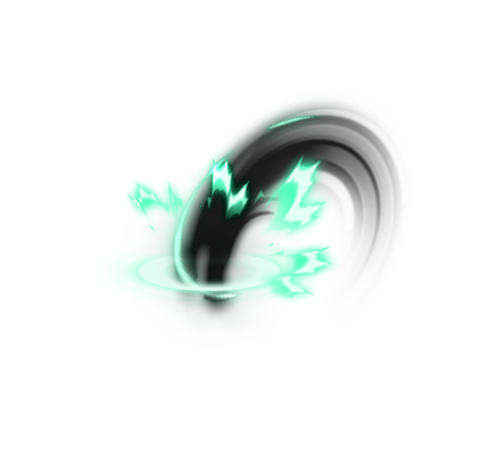
guanyu_2skill3 · guanyu_2_skill3-animation_
guanyu_phyattack · guanyu_phyattack-animation_